Введение
Как организовано руководство
-
Часть 1: Что такое Viseven? В этой части руководства объясняется что такое Viseven CLM, и на кого он ориентирован, а также общее описание.
-
Часть 2: Прежде чем Вы начнете. Эта часть посвящена основным правам и ролям пользователей.
-
Часть 3: Структура Viseven Analytics Portal. Эта часть описывает все функции Web Portal, его модули, а также как их настроить, и как начать работать за несколько часов.
Что собой представляет Viseven CLM?
Viseven CLM — инструмент, разработанный специально для фармацевтических компаний, который помогает с лёгкостью администрировать и управлять командой торговых представителей. Также Вы можете использовать свои собственные системы CRM через наш защищённый API Viseven Connect. Он состоит из Viseven Analytics Portal и Viseven Mobile App.
Viseven CLM является основным приложением для торгового представителя для контроля и управления его визитами на портативных мобильных устройствах, гео-позиционирования и создания своего маршрута, цифровой контент (презентации), авто-синхронизация с Analytics Portal, сбора KPI, а также многое другое. Одними из ключевых особенностей является фотоотчеты и организации заказов.
Viseven Mobile App поставляется в виде клиентского приложения для IOS, Android и Windows Phone 8 мобильных платформ.
Viseven Analytics Portal это “облачная” система для администрации Viseven устройств CLM.
Viseven Web Portal имеет модульную систему и, он может быть настроен в зависимости от того, какая функциональность Вам нужна для работы. Более подробная информация описана в Части 3 данного руководства.
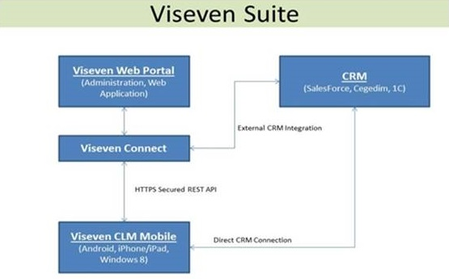
Наше видение
-
Простота: легкая настройка программы и адаптация к предпочтениям клиента.
-
Гибкость: возможность реализации функциональности программы для каждого клиента. Модульная архитектура системы.
-
Простой и стильный дизайн: программа проста в использовании и предоставляет удобный интерфейс. Простое и быстрое самообучение.
-
Постоянная поддержка программы. Быстрое развитие и совершенствование решения.
Прежде чем вы начнете
Роли и права
С помощью этого приложения Вы можете контролировать пользовательскую базу вашей компании и роли - добавлять пользователей и определять уровень доступа (администратор компании, менеджер, медицинский представитель и т.д.). Администратор имеет право создавать пользователей - менеджера компании, медицинских представителей и давать необходимые разрешения на каждый модуль.
Чтобы использовать приложение, нужно сначала войти в систему - введите ваш адрес электронной почты (выдаётся администратором) и пароль, нажмите кнопку "Войти". Если пользователь забыл свои данные - нажмите кнопку "Забыли пароль?", введите свой адрес электронной почты и ждите получения письма подтверждения, чтобы Вы смогли войти в приложение повторно.
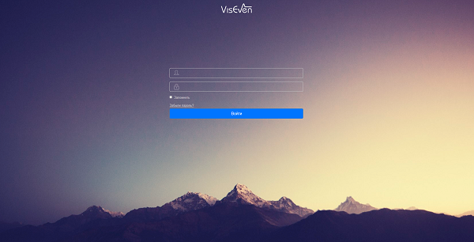
В последней версии Портала доступны 2 роли пользователя: Менеджер (Manager) и Медицинский представитель (MedRep). Каждый пользователь имеет только одну роль. Роль Менеджер присваивает только Администратор. В свою очередь, Менеджер имеет возможность создавать Медицинских представителей (MedRep).
Вкладка «Роли» доступна в разделе «Администрирование» бокового меню:
Права ролей
Администратор – имеет абсолютный доступ к настройкам и администрированию портала. Может создавать пользователей (менеджера и медицинского представителя).
Менеджер – имеет возможность создавать менеджеров и медицинских представителей, создавать им визиты, администрировать деятельность медицинского представителя, завершать визиты на Портале.
Медицинский представитель – имеет возможность планировать активность на Портале, создавать визиты и отчеты по своей активности. Так же имеет возможность создавать учетные записи медицинских представителей.
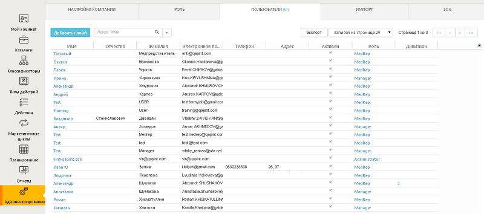
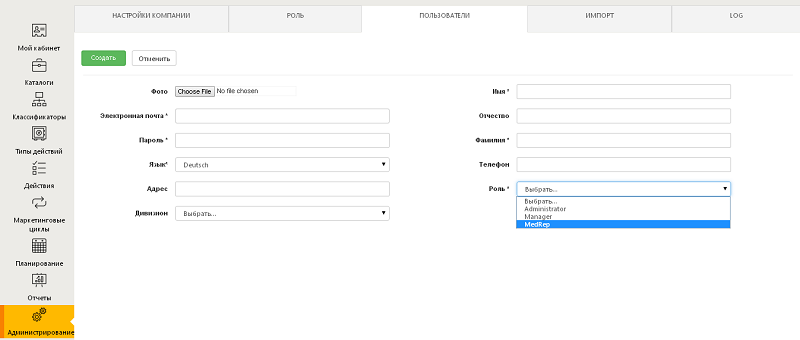
Назад к оглавлению
Работа с порталом
Веб-Портал Viseven имеет модульную структуру. Все модули для удобства пользователя разделены на разделы. в разделы:
Мой кабинет
В разделе «Мой кабинет» Вы имеете возможность просматривать и редактировать информацию своей учетной записи.
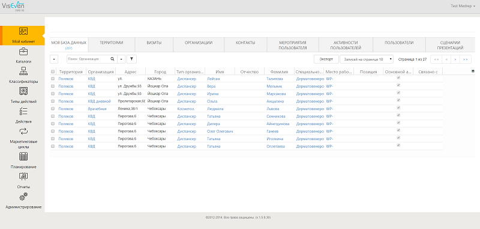
Нажав на кнопку «Редактировать», Вы сможете указать email для входа в систему, ввести свои имя, фамилию, телефон и выбрать язык интерфейса портала. У Вас так же есть возможность загрузить своё фото, нажав на кнопку «choose file».
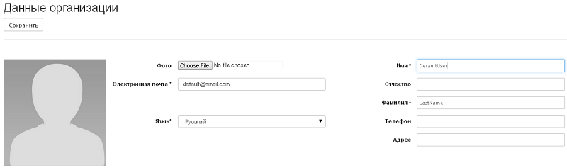
Нажав на соответствующую вкладку внизу раздела, Вы так же можете посмотреть информацию, которая привязана непосредственно к вашему профилю: ваши территории, визиты, организации, контакты, мероприятия и активности. Сценарии ваших презентаций хранятся в разделе «Сценарии».
Каталоги
В разделе «Каталоги» Вы имеете возможность администрировать ваши базы Организаций, Контактов, Сетей, данные по Продуктам, Серии продуктов, промо Материалы, которые хранится на Портале, Места Работы контактов, Территории, на которых работают медицинские представители, а также управлять Подразделениями, в которых они работают.
• • •
В модуле «Организации» отображаются список всех организаций, которые внесены в вашу базу данных:
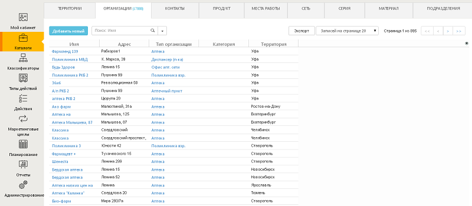
Здесь Вы так же можете добавить новую организацию, нажав на кнопку «Добавить новый»:
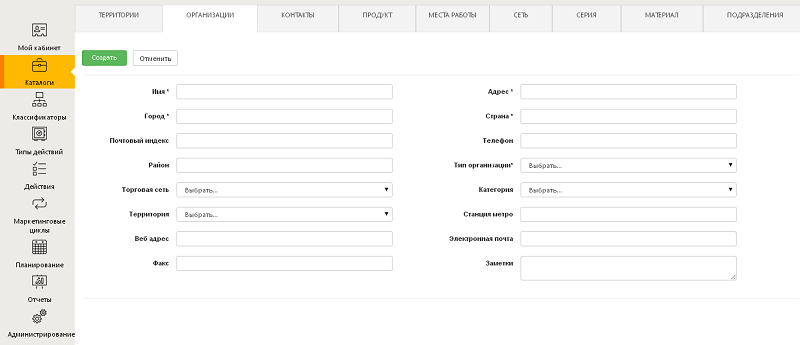
Вы так же можете сделать сортировку организаций (прямую и обратную) по нужной Вам категории, нажав на соответствующем наименовании столбца («имя», «адрес» и т.д.). Так же Вы можете менять ширину каждой из колонок, нажав на область сбоку от имени столбца и потянув в сторону.
Чтобы воспользоваться детализированной сортировкой по категориям, нажмите на кнопку  в правой части экрана, после чего Вам откоется окно настроек сортировки:
в правой части экрана, после чего Вам откоется окно настроек сортировки:
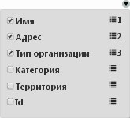
В данном примере сортировка применена к категориям «Имя», «Адрес» и «Тип организации» с соответствующим порядком вложенности. В результате сортировка будет выглядет так:
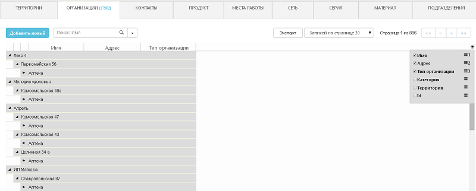
Чтобы найти интересующую вас организацию, воспользуйтесь полем «Поиск», задав нужную категорию для поиска. Для более точного поиска вы так же можете воспользоваться функцией фильтра.
Чтобы воспользоваться поиском с фильтром на портале, зайдите в интересующий вас раздел и нажмите на кнопку фильтров справа от поля поиска:
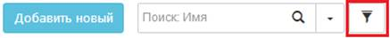
Рассмотрим функцию поиска на примере организаций. Чтобы найти интересующую вас организацию, вам доступны одновременно 5 фильтров для поиска: по имени, адресу, типу, категории и ID. Так же вам доступна опция Select all (Выбрать все).
К примеру, чтобы воспользоваться поиском организации по адресу и имени, проделайте следующее:
1/ В поле поиска нажмите на кнопку фильтра:
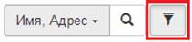
2. Нажмите на кнопку «None selected» и поставьте галочки напротив пунктов «Имя» и «Адрес»:
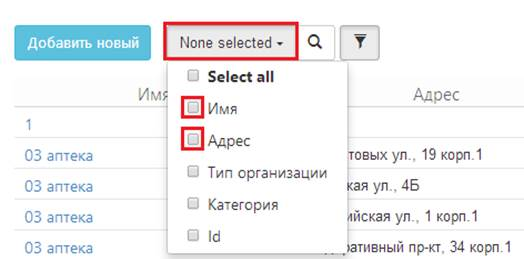
Примечание:
Аналогичные опции сортировки и изменения ширины столбцов так же доступны во всех остальных разделах портала.
• • •
В модуле «Контакты» Вы можете просмотреть список всех Контактов, внесенных в базу данных:
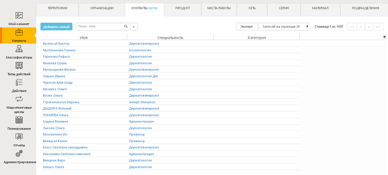
А так же добавить новый:
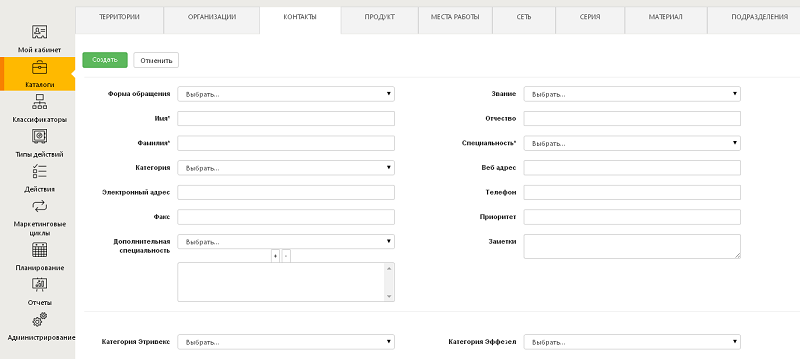
Примечание:
Для удобного внесения в базу данных Портала большого количества данных предусмотрена функциональность Импорта/Экспорта данных, доступна в разделе «Администрирование».
• • •
В модуле «Сеть» Вы можете создавать и редактировать Сети, в которые объеденены ваши организации:
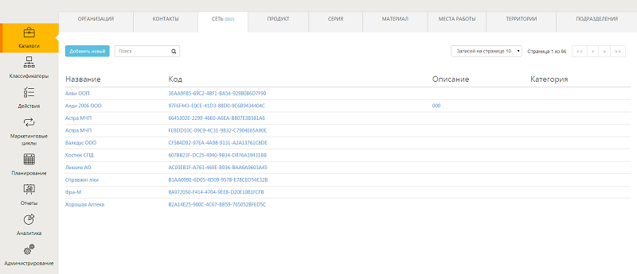
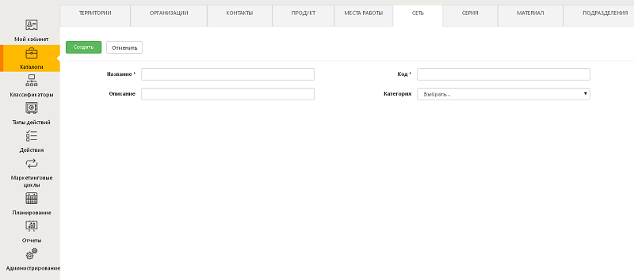
• • •
Модуль «Продукт» отображает список продуктов вашей компании. На вкладке отображается Продукт, который продвигается компанией и Серия, к которой она относится.
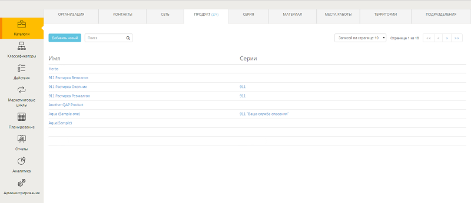
При нажатии на продукт Вы перейдете на детальное его описание, где сможете просмотреть добавленные промо материалы по данному продукту, список визитов, на которых показывался данный продукт, а также редактировать данные по нему:
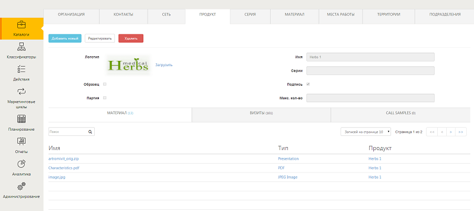
Для добавления нового продукта нажмите кнопку «Добавить новый»:
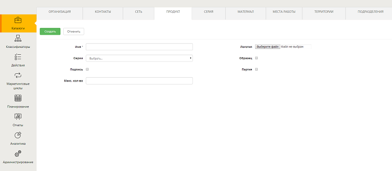
• • •
В модуле «Серия» Вы можете добавлять новые и редактировать уже существующие серии, которые будут присвоены продуктам:
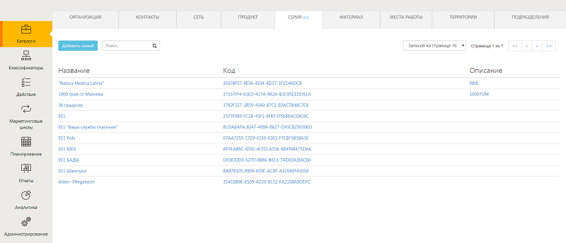
Для того, что бы добавить серию нажмите кнопку «Добавить новый» и заполните соответствующие поля:
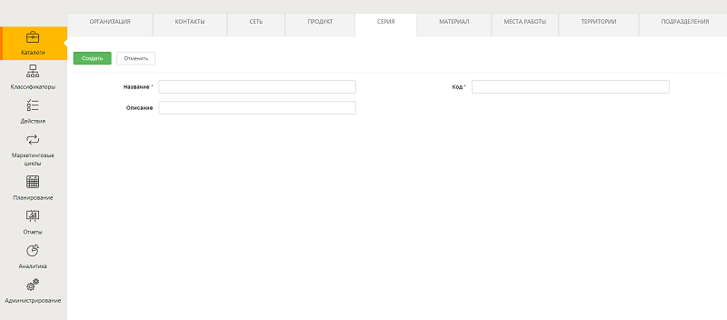
• • •
Модуль «Материалы» служит для упорядочивания промо материалов по вашим Продуктам:
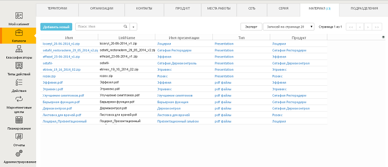
Добавить новый материал Вы можете, нажав на кнопку «Добавить новый»:
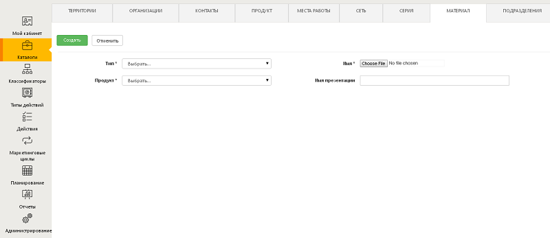
Материалы могут иметь различный формат: это могут быть и pdf-документы, презентации, выдержки из статей, цикловые книги, постеры и изображения продуктов, которые продвигаются, а также видеоролики, аудиозаписи и прочее.
• • •
Модуль «Места Работы» служит для связки Контактов и Организаций, в которых они работают:
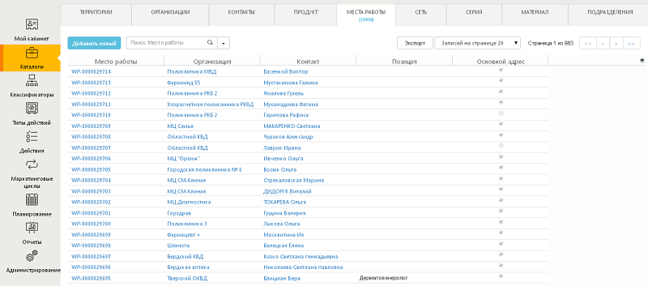
Для создания Места работы, нажмите кнопку «Добавить новый» и выберите Организацию и Контакт, которые Вам необходимо связать:
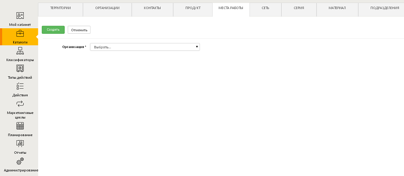
• • •
С помощью модуля «Территории» Вы можете упорядочить ваши организации по территориальному принципу. Это позволяет более удобно сегментировать и управлять организациями, с которыми работает медицинский представитель:
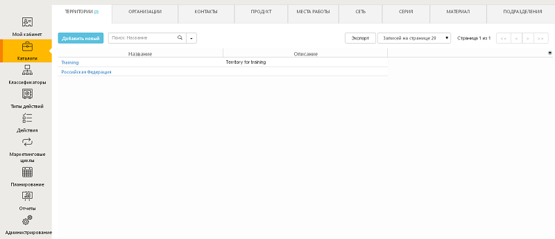
Для добавления новой территории, нажмите кнопку «Добавить новый» и заполните необходимые поля:
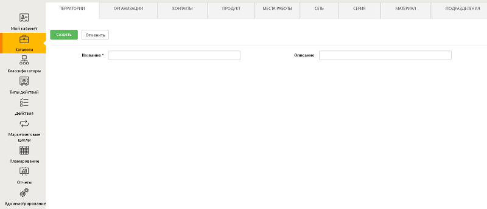
• • •
В модуле «Подразделения» Вы имеете возможность создавать подразделения, по которым можете группировать ваши Контакты:
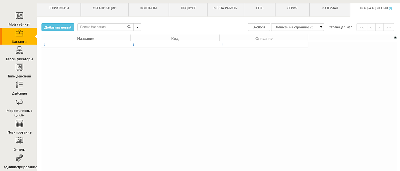
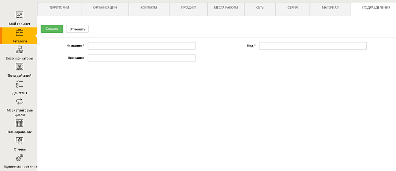
Классификаторы
В данном разделе Вы можете указывать типы материалов, которые используются для продвижения Продуктов, вносить данные по Специальностям медицинских работников, вносить изменения и добавлять Типы организаций, Характеристик, Форм обращения к Контактам и их титулов, указывать Категории Контакта и Категорий Организаций.
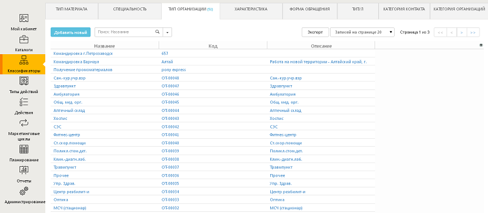
Добавление, редактирование и удаление записей в данном разделе аналогичен по своей структуре с разделом «Каталоги».
Типы действий
Данный модуль содержит информацию о типах действий и включает в себя такие разделы, как "Тип визита", "Активность", "Мероприятия", "Причины непоказа", "Причины отмены совместного визита", "Типы KPI"
- Тип визита
- Активность
- Мероприятия
- Причины непоказа
- Причины отмены совместного визита
- Типы KPI
такие разделы, как тип визита, активность, мероприятие, причины непоказа, причины совместного визита и типы KPI
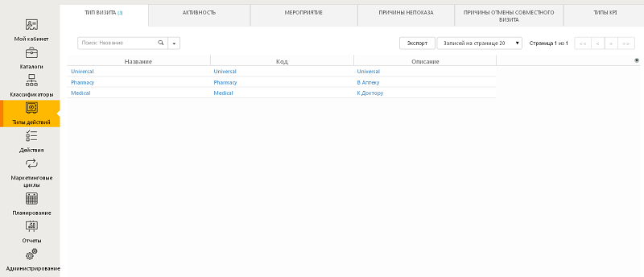
• • •
Информация о доступных типах визитов содержится в разделе «Тип визита»
В разделе «Активность» находятся типы административной деятельности, которая не связана непосредственно с визитной деятельностью (например, отпуска, отгулы, больничные). В данном разделе Вы можете просматривать существующие типы активностей, а так же создавать новые.
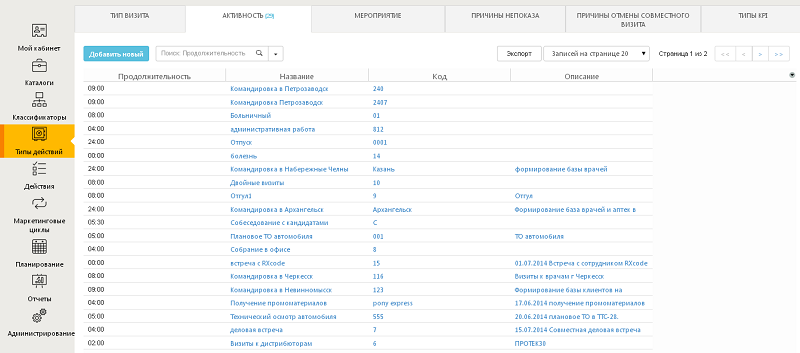
Чтобы добавить новый тип активности, нажмите на кнопку «Добавить новый».
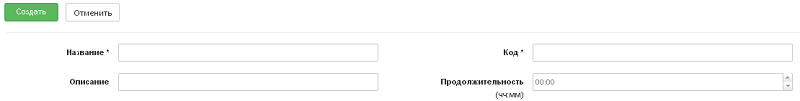
После того, как Вы заполните соответствующие поля и нажмете «Создать», новый тип активности добавится к общему списку.
• • •
Модуль «Мероприятия пользователя» используется для создания и управления типами активностей пользователя, которые напрямую не связаны с визитами к врачу или в организацию (например, конференции, деловые встречи).
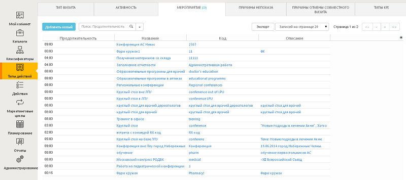
Чтобы добавить тип мероприятия, нажмите на кнопку «Добавить новый», после чего Вам нужно будет заполнить соответствующие поля и нажать на кнопку «Создать»:
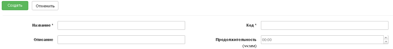
• • •
В разделе «Причины непоказа» находится список причин, по которым не была показана презентация. Если выбрать режим «Без показа» во время проведения визита на планшете, Вы сможете указать одну из существующих причин.
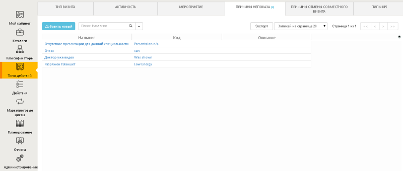
Чтобы добавить причину непоказа, нажмите на кнопку «Добавить новый» и заполните соответствующие поля.
• • •
В разделе «Причины отмены совместного визита» находится список соответствующих причин, одну из которых можно указать, если совместный визит пришлось отменить. Здесь Вы так же можете создавать новые причины, либо редактировать существующие.
• • •
В разделе «Типы KPI» Вы можете просматривать соответствующие KPI. Для редактирования, либо создания новых KPI, ножно обладать правами администратора.
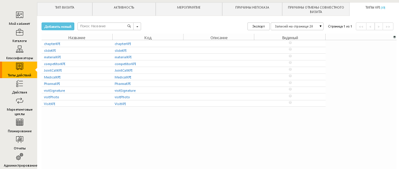
Действия
В разделе «Действия» собраны модули активности медицинских представителей. В него входят данные по Визитам, которые совершают медицинские представители, их Маршруты, данные GPS-слежения, Мероприятиий и активностей Пользователя.
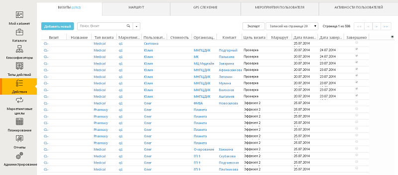
• • •
Модуль "Визиты".
В данном модуле Вы можете просматривать, создавать и редактировать визиты, созданные для медицинских представителей. Для просмотра данных по визиту, нажмите на его название. Вы увидите Организацию, в которую был создан визит, контакт, адрес организации, поля характеристик. Также Вы сможете просмотреть собранные КПИ по визиту и Статистику, перейдя по соответствующим вкладкам:
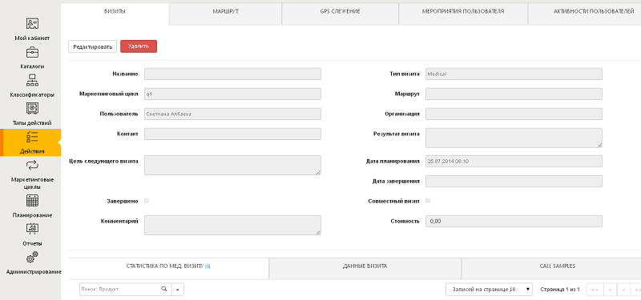
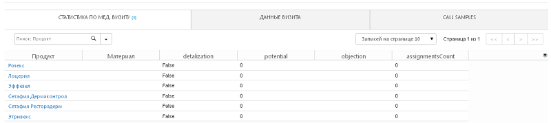
Визиты могут быть созданы только когда тип визита, маркетинговый цикл, пользователи, организации, маршруты, контакты уже созданы в компании.
Для создания нового визита, нажмите на кнопку «Добавить новый».
• • •
Модуль «Маршрут» позволяет создавать маршруты для медицинских представителей, с помощью которых Вы можете с легкостью планировать их активность.
При создании маршрута Вы можете добавить в него Организации, Места работы и выбрать Маркетинговый цикл:
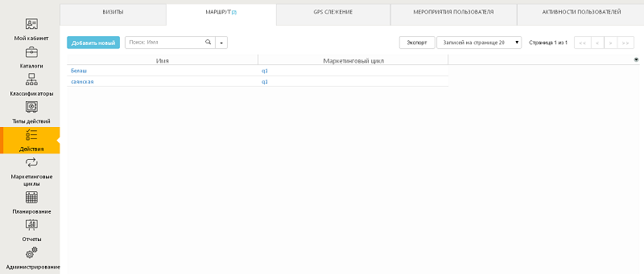
Для создания маршрута нажмите на кнопку «Добавить новый»:
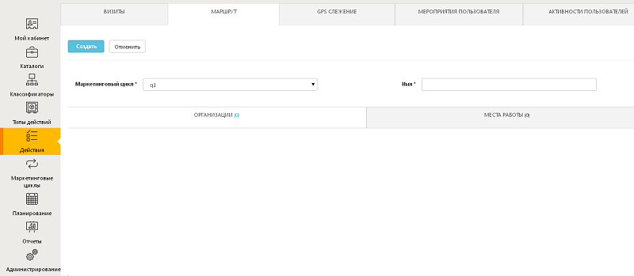
• • •
В модуле «GPS-слежение» Вы можете следить за передвижениями медицинских представителей, указав имя и территорию соответствующего представителя:
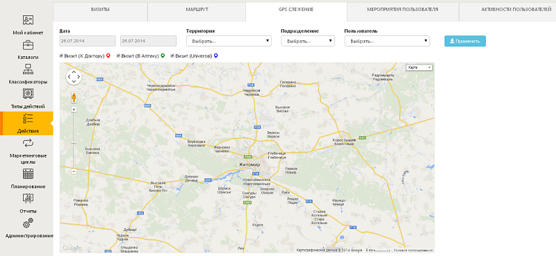
Информация синхронизируется с устройства на сервер каждые 10 минут, чтобы иметь возможность мониторинга визитов визита (время и дату завершения).
• • •
В модуле «Мероприятия пользователя» мождо просматривать уже запланированные мероприятия, либо планировать новые.
При создании мероприятия есть возможность назначить место, время, выбрать несколько контактов, тип мероприятия, указать план мероприятия.
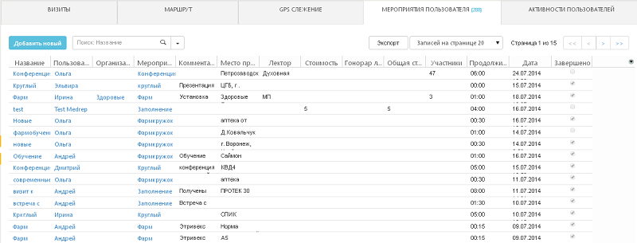
При переходе на мероприятие Вы увидите данные по нему:
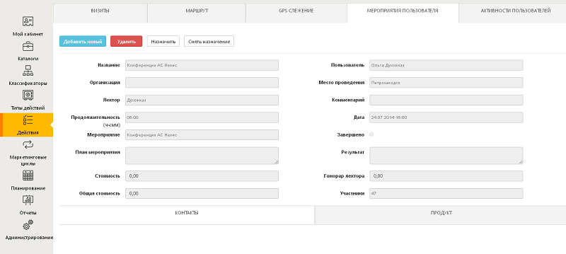
Чтобы запланировать новое мероприятие, нажмите на «Добавить новый». После заполнения необходимых полей, нажмите на кнопку «создать»:
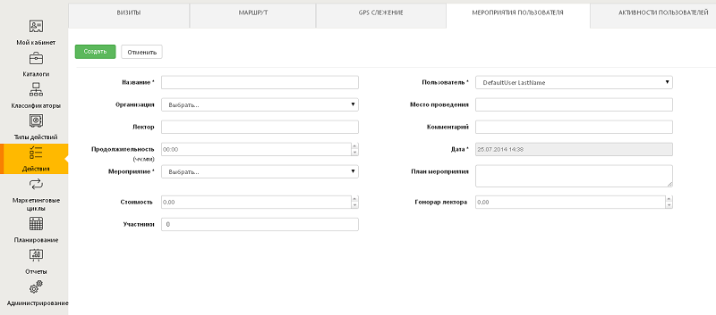
• • •
В модуле «Активности пользователей» Вам доступен список запланированных активностей пользователей, в котором Вы можете редактировать имеющиеся активности, а так же создавать новые.
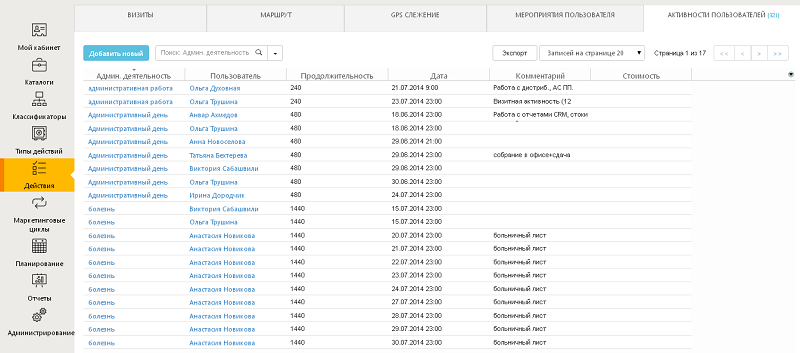
Маркетинговые циклы
Здесь представлены данные по маркетинговым циклам, возможность их настройки и создания в соответствии с деятельностью вашей компании.
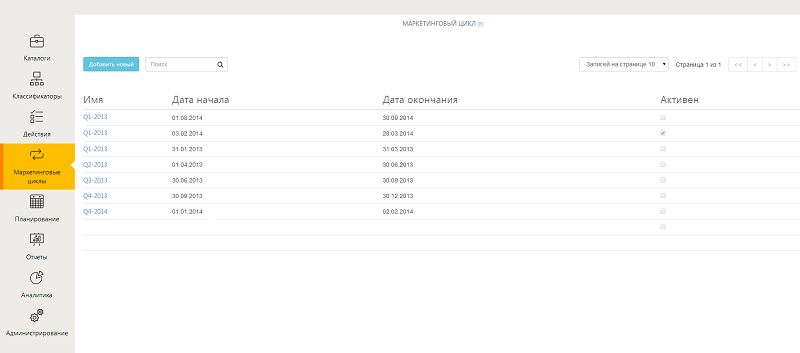
Выбрав интересующий Вас маркетинговый цикл Вы перейдете на его данные, где отображены продвигаемые продукты в данном цикле, сценарии продуктовых презентаций, целевые показатели, целевые контакты и бюджет маркетингово цикла:
Для создания нового цикла нажмите кнопку «Добавить новый»:
Планирование
В данном модуле Вы имеете возможность планировать свои визиты, мероприятия и активности. Если Вы являетесь менеджером, Вы так же можете планировать вышеперечисленные активности для ваших медицинских представителей. Модуль представлен в виде удобного календаря в который Вы можете перетаскивать места работы, маршруты, мероприятия и организации пользователя. При нажатии кнопки «Сохранить» визиты к данным организациям/контактам будут созданы автоматически.
Есть возможность переключать вид календаря на месячный, недельный и дневной.
Модуль позволяет планировать и организовывать все необходимые визиты на месяц, неделю или день. Пользователь может планировать свою работу - организовать свой маршрут на месяц, неделю или день, определить время и продолжительность визита, к кому он / она будет идти.
Чтобы запланировать визит из раздела «Планирование», нажмите на вкладку «Места работы», если Вы хотите создать визит к доктору, либо на «Организации», если Вам нужно создать визит в аптеку/больницу. После этого, укажите тип визита и маркетинговый цикл в «Настройках календаря», затем перетащите визит на нужный день в календаре. Если Вы создаёте визит не себе, а своему медицинскому представителю, укажите предварительно в поле «Пользователь» его имя.
Если Вы объединили несколько визитов в маршрут, то при перетаскивании маршрута на календарь он автоматически создаст все визиты на указанные дату и время.
Цветовая индикация:
Зеленым цветом показаны запланированные визиты, черным – завершенные, синим - активные мероприятия и серым цветом - завершенные мероприятия. Оранжевым цветом показаны административные деятельности.
Отчеты
Данный раздел содержит 2 модуля: "Отчёты" и "Аналитика"
Генератор Отчетов не требует углублённого обучения, пользователи могут создавать свои собственные отчеты и публиковать их для использования их отделом или остальной компанией.
Генератор Отчетов позволяет создавать папки с набором отчётов и устанавливать параметры безопасности (уровни доступа), поэтому только нужные люди могут работать с определённым отчетом.
Это означает, например, что Вы можете назначить уровень доступа для каждого отчета, классифицировать отчеты так, как Вам нужно.
Данные для отчетов берутся с базы данных Портала, так что Вы можете управлять всей информацией (пользователи, визиты, маршруты, маркетинг циклы и т.д.), которые хранятся на сервере.
• • •
Нажав на модуль "Отчеты", Вы получаете доступ к "Viseven Report Generator". Здесь Вы можете найти папки, которые состоят из различных предопределенных шаблонов отчетов, созданных пользователем.
Что бы приступить к формированию отчета, выберите необходимый Вам шаблон и нажмите кнопку «Запустить». На появившийся форме заполните необходимые поля и нажмите кнопку «Показать отчет»:
Так же имеется возможность отправки отчетов на ваш электронный адрес. Для этого достаточно нажать кнопку «Отправить по e-mail» и ввести нужный электронный адрес:
• • •
Модуль «Аналитика» используется для создания аналитических отчетов по активностям ваших медицинских представителей.
Модуль «Аналитика» предоставляет пользователю возможность строить графические отчеты (диаграммы, графики, чарты, индикаторы) в различных разрезах для получения детальной картины происходящего на всех участках процессов компании. Для каждого графика есть возможность экспорта его данных в xls. Пользователь имеет возможность создать и настроить необходимые представления данных с помощью Дизайнера отчетов и начать их использование, загрузив форму на портал.
Пользователи могут собирать, группировать, настраивать различные варианты графиков, отчетов в «панели индикаторов» чтобы видеть всегда актуальную ситуацию по различным участков бизнес-процессов компании.
Импорт данных на Портал
Импорт данных доступен из раздела «Администрирование». Данные могут быть импортированы в любой модуль. Перейдя в раздел «Импорт», Пользователь может выбирать поля, которые желает импортировать. Для внесения новых данных Пользователь может указать файл с данными, выбрать существующий шаблон разметки данных или создать новый, который можно сохранить для последующего использования. Используя этот модуль Пользователь может скачать файл с данными, внести изменения, а затем импортировать новые данные. Таким образом данные обновятся.
Функция Импорта дает возможность быстро и удобно создавать, дополнять и изменять ваши Базы Данных на Веб-Портале. С помощью Импорта Вы можете без особого труда добавить новые организации, контакты, специальности на портал, а также типы организаций, материалов, территорий, типы визитов/характеристик, связав их между собой.
Импорт является многофункциональным и дает возможность создавать и редактировать шаблоны импорта и настраивать сложные привязки из разных БД для заполнения данных.
Пример: для заполнения баз организаций Вам необходимо указать их тип, например, Аптека. Тип в структуре портала является идентификатором, который имеет числовой тип (например: Аптека - 1, Госпиталь - 2, Поликлиника- 3 и т.д.). В вашей таблице Тип организации буквенный (Аптека). Что бы не изменять «Аптека» на идентификатор «1», достаточно просто во время импорта привязать к колонке «Идентификатор Типа организации» (OrganizationTypeId) поле «Имя» (Name) таблицы «Тип организации» (OrganizationType). Портал самостоятельно считает Идентификатор, присвоенный слову «Аптека» .
Рассмотрим функцию Импорта на примере добавления баз Организаций.
Для более удобного добавления баз Вам достаточно иметь excel-документ с заполненными данными по Контактам/Организациям в формате *.csv.
Что бы загрузить ваш файл на Портал, воспользуйтесь функцией «Импорт», которая находится в разделе «Администрирование».
Для этого Вам необходимо:
-
Иметь excel-файл с базой данных, сохраненный в формате CSV (excel-совместимый)
-
Во вкладке «Импорт» раздела «Администрирование» загрузить ваш файл, нажав на кнопку «Загрузить»
-
Что бы данные корректно добавились в базу Веб-Портала, выполнить привязку полей вашего файла к полям структуры БД:
Привязку необходимо выполнить для полей, которые являются обязательными в БД Веб-Портала:
- Название организации - таблица Organization, поле - Name
- Адрес - таблица Organization, поле - Address
- Страна - таблица Organization, поле - Country
- Тип организации - таблица Organization, поле – OrganizationTypeId, ссылка на внешнюю таблицу – OrganizationType, поле внешней таблицы – Name
После выполнения привязки нажать кнопку «Применить», которая находится справа от таблицы.
-
Нажать кнопку «Запустить», дождаться выполнения операции.
Организации будут автоматически добавлены на Веб-Портал.
Назад к оглавлению